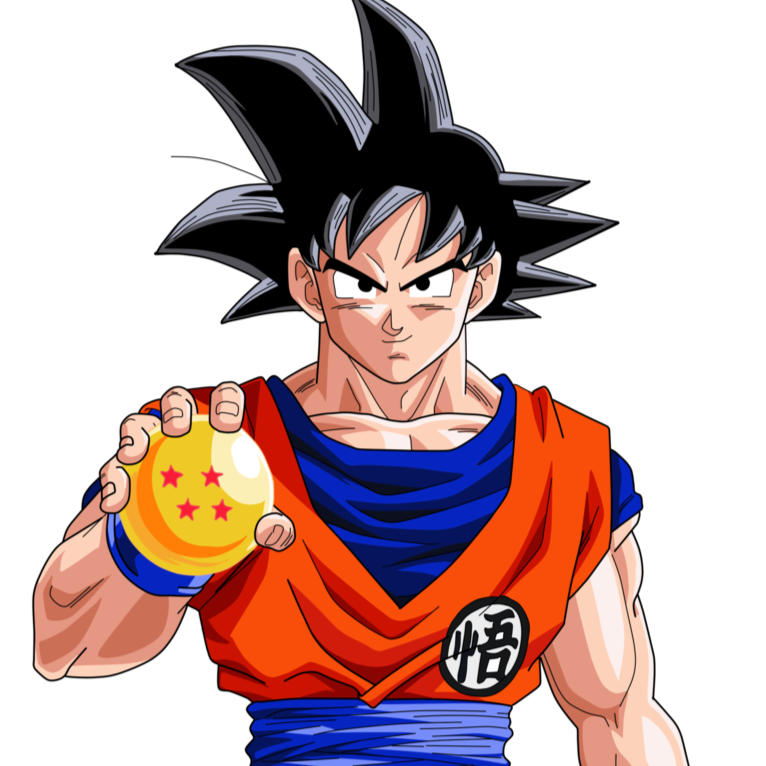
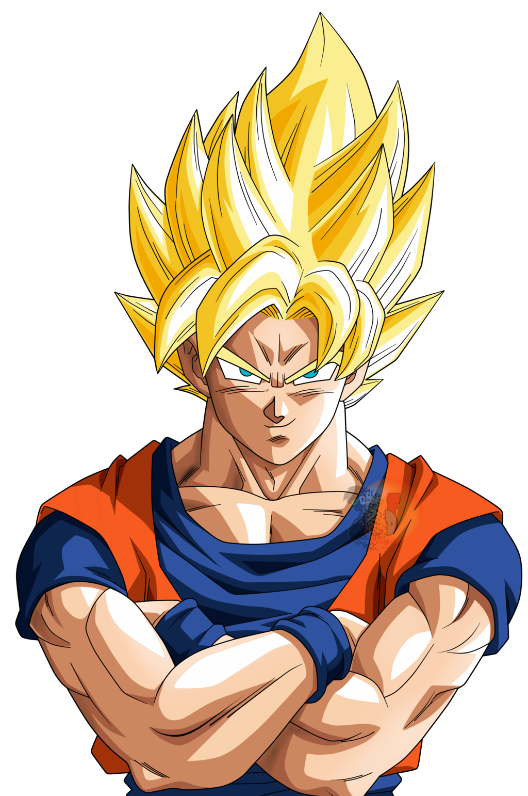
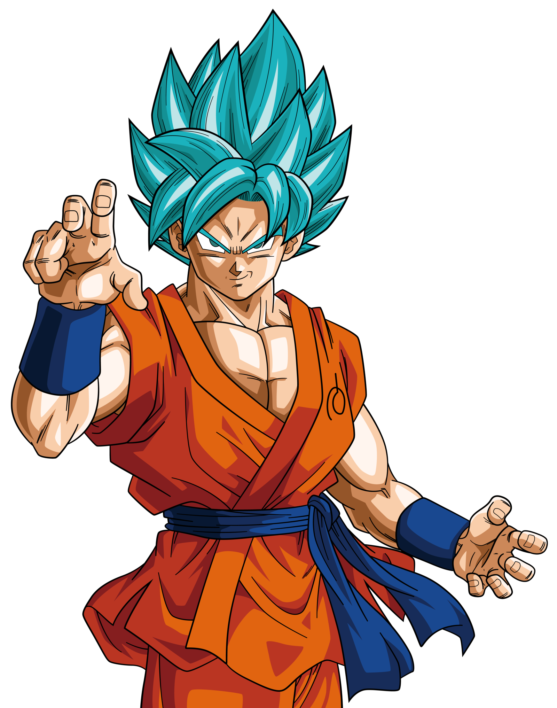

-
son goku
hp 4000
descrição
Como um saiyajin, um dos poderes de Goku é ter uma força física superior a qualquer ser humano e muitos alienígenas. Então ele é forte o suficiente para quebrar sem esforço todos os materiais ou armas feitos por terráqueos. Além disso, em maior gravidade, ele se move sem nenhum desconforto e até mesmo veste um traje capaz de afundar um planeta.
-
goku sayajin
hp 7400
descrição
Super Saiyajin é uma transformação avançada usada por membros extraordinariamente poderosos da raça Saiyajin na franquia Dragon Ball. Terráqueos em Dragon Ball Online também podem usar a transformação.
-
goku-blue
hp 450000
descrição
Pode localizar outros lendo seu ki, detectando intenções maliciosas, diferenças nos níveis de poder e seres em diferentes dimensões), Sentidos Aprimorados (Mesmo sem o treinamento do ki, Goku tem sentidos excepcionais que lhe permitem localizar objetos pequenos e distantes rastreando seu cheiro, ver claramente a longas distâncias e rastrear os movimentos de outros, mesmo em condições de escuridão total, sentindo vibrações no ar), Quebra ocasional limitada da Quarta Parede, Geração de Ondas de Choque, Acrobacia, Voo, Ataques de Ponto de Pressão, Criação de Pós-Imagem, Cópia de Poderes